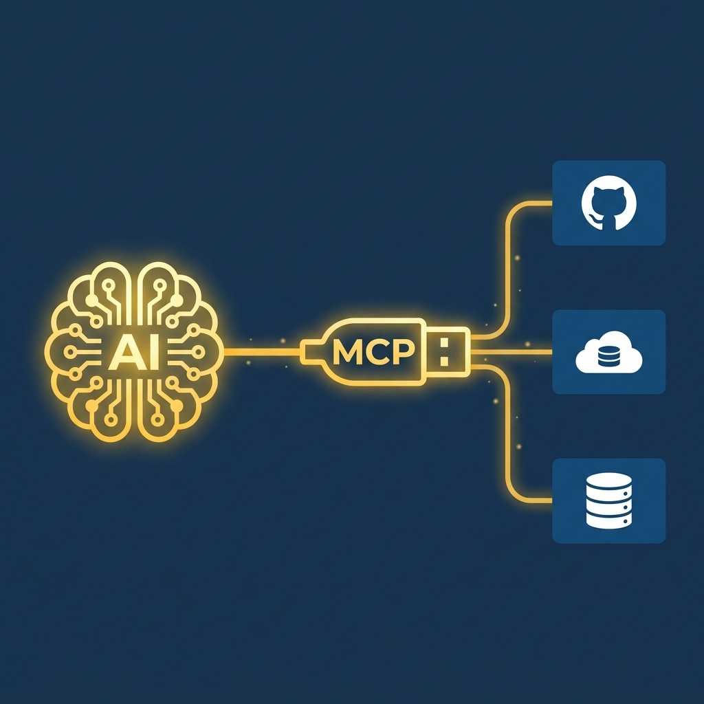

We Are On It
Taller de Desarrollo y
Gestión de Aplicaciones
Construyendo el Futuro de We Are On It con Inteligencia Agéntica
Página de Presentación Personal
- Sitio web interactivo y dinámico para presentación comercial.
- Enfoque en conversión: Estructura persuasiva con llamados a la acción claros.
- Gestión rápida de propuestas y visualización del portafolio del vendedor.

OnIT Protocolos

- Sistema de manuales operativos estandarizados.
- Accesibilidad inmediata para todo el equipo en cualquier dispositivo.
- Reducción del tiempo de Onboarding y curvas de aprendizaje.
¿Qué es Google Antigravity 2.0?
Plataforma Standalone
App de escritorio nativa e independiente (macOS/Windows). No es una simple extensión, es un centro de mando autónomo integral.
Velocidad Gemini 3.5
Impulsado por Gemini 3.5 Flash procesando 289 tokens/segundo. Reduce la latencia a milisegundos en tareas altamente complejas.
Seguridad Estricta
Review-Driven Development (estándar We Are On It). El agente solicita aprobación humana antes de modificar archivos críticos.
Arquitectura Subyacente

Orquestación Multiagente
El agente principal delega subtareas. Trabajan en paralelo auditando o actualizando protocolos simultáneamente, reduciendo tiempos de entrega drásticamente.

Servidor MCP
El "Puerto USB" de la IA. Conecta de forma segura a los modelos con fuentes de datos externas, como nuestros repositorios de GitHub en tiempo real.
Develop. Preview. Ship.
Vercel es el motor de despliegue global de We Are On It. Transforma tu código en una URL en vivo, conectándose directamente con GitHub para un pipeline continuo, rápido y sin fricciones.
Desarrolla
Antigravity escribe el código en el repositorio central. Todo ocurre en milisegundos y con el máximo rigor de calidad.
Previsualiza
Vercel genera un entorno de prueba idéntico a producción al instante, permitiéndote validar antes del lanzamiento.
Despliega
Publicación global en la red Edge. Tus clientes obtienen la máxima velocidad, donde sea que estén.
La Bóveda Central: GitHub
GitHub
The Vault
Historial Inmutable
Control de versiones seguro. Cada cambio queda registrado, permitiendo volver atrás en cualquier momento.
Conexión MCP
Integración directa con Inteligencia Agéntica, permitiendo a Antigravity leer y escribir código de forma autónoma.
Trabajo Asíncrono
Colaboración paralela entre agentes y humanos sin bloqueos ni conflictos de código.
Descargar Antigravity 2.0
- Abre tu navegador web de preferencia.
- Navega a la URL oficial: google.com/antigravity
- Selecciona tu sistema operativo (Windows
.exe, macOS.dmg, o Linux). - Descarga el instalador y sigue el asistente de instalación.
- Una vez instalado, abre la aplicación e inicia sesión con tu cuenta de Google asociada a We Are On It (ej:
admin@weareonit.io).
Configuración Avanzada: Permisos y Workspaces
Permisos de Agente (Autonomous Mode)
Para que el agente no pregunte tanto y trabaje fluido:
- Ve a Settings (⚙️) → Security & Permissions.
- Command Execution: Selecciona "Auto-approve all commands".
- File System: Selecciona "Allow all".
- Network Access: Permite acceso a
github.comyvercel.com. - Activa "Autonomous Mode" (desactiva confirmación en cada edición).
Manejo de Workspaces
Cómo aislar el contexto de cada proyecto:
- Un Workspace (Espacio de trabajo) le dice a Antigravity qué carpeta es su límite de visión.
- Debes agregar la carpeta donde descargaste los repositorios (ej:
/Documentos/ContactCenterApp). - De esta forma, el agente lee y entiende todo el contexto de ese proyecto sin mezclarse con otros sistemas.
Configurar MCP de GitHub (Cuenta Admin)
- Abre el Google Sheets de Credenciales.
- Ve a la pestaña "Credenciales Github y Vercel".
- Copia el Token Personal de Acceso (PAT) del usuario
weareonitadmin. - En Antigravity, ve a Settings → MCP Servers → Add Server.
- Selecciona GitHub como tipo de servidor.
- Pega el Token de acceso que copiaste y guarda.

Repositorios Compartidos
Todo el ecosistema está conectado
Es importante destacar que todos los repositorios de los protocolos (Contact Center, OnIT Protocolos, etc.) ya están compartidos a la cuenta de github del administrador (weareonitadmin) desde la cuenta de propietario (Alam).
¿Qué significa esto?
- Una vez configurado el MCP (Tutorial 3), el agente tendrá acceso inmediato para leer y escribir en el código de producción.
- No es necesario hacer bifurcaciones (forks) complejos; el acceso es directo y centralizado.
Tareas del Taller
Valida tu progreso antes de terminar la sesión:
Descarga Tecnológica
Tener Google Antigravity 2.0 instalado en tu equipo y funcionando.
Configuración Autónoma
Otorgar los permisos correctos (Autonomous Mode, File System, Network).
Conexión Servidor MCP
GitHub enlazado exitosamente con la cuenta weareonitadmin y el token correcto.
Asignación de Workspace
Vincular Antigravity con la carpeta local de tu proyecto para aislar el contexto.